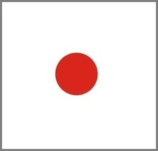

| 花蓮縣 | 機會 | 新竹市 | 南投縣 | 新竹縣 | 台中市 | ||
| 苗栗縣 |

|
宜蘭縣 | |||||
| 彰化縣 | 台東縣 | ||||||
| 桃園市 | 新北市 | ||||||
| 屏東縣 | 嘉義市 | ||||||
| 高雄市 | 雲林縣 | ||||||
| 基隆市 | |||||||
| 台南市 | 嘉義縣 | 台北市 | 命運 | 澎湖縣 | 釣魚台 | 公園 | |